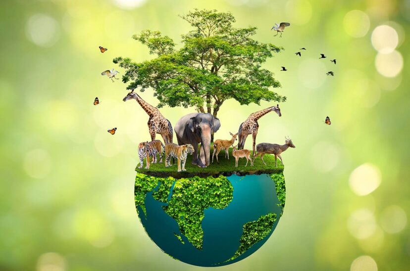

Agricultura Orgánica
Cultivos libres de químicos que respetan la salud del suelo y los consumidores.

Gestión del Agua
Sistemas de riego eficientes y técnicas de conservación del agua.

Biodiversidad
Promoción de la diversidad biológica y protección de ecosistemas.